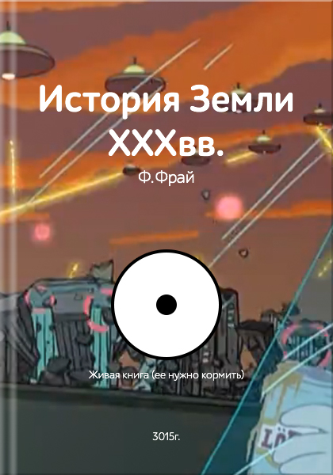
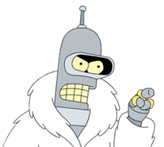
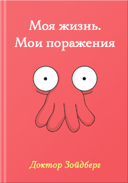
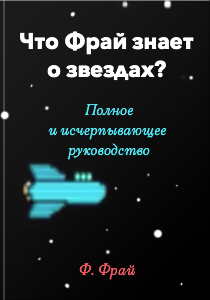
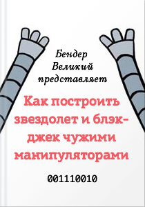
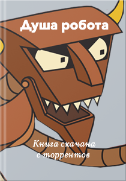
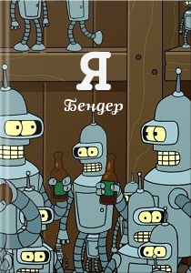
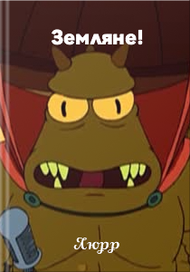

<!DOCTYPE html>
<html>
    <head>
        <meta charset="utf-8">
        <title>Фрай, без штанов и Бендер</title>
        <link href="vendors/normalize.css/normalize.css" rel="stylesheet">
        <!-- build:css -->
        <link href="assets/styles/main.css" rel="stylesheet">
        <link href="assets/styles/header.css" rel="stylesheet">
        <link href="assets/styles/eye.css" rel="stylesheet">
        <link href="assets/styles/book/info.css" rel="stylesheet">
        <link href="assets/styles/book/list.css" rel="stylesheet">
        <link href="assets/styles/about.css" rel="stylesheet">
        <!-- endbuild -->
    </head>
    <body ng-app="IntergalacticApp" ng-controller="mainController">
        <main>
            <header ng-controller="headerController">
                <div class="logo"></div>
                <div class="search"></div>
            </header>
            <section class="book-info" ng-controller="bookInfoController">
                <h1>Мы издаем книги &mdash; вы их можете не читать</h1>
                <div class="row first-row">
                    <!-- Book cover (оно же центральная колонка) -->
                    <article class="cover col-middle ribbon ribbon-red">
                        <div class="image">
                            <div class="eye"></div>
                            
                        </div>
                        <span class="note">
                            В топ-100 <span>Zoidberg</span>zon.com в разделах &laquo;Это правда было так&raquo; и
                            &laquo;Когнитивный писсонанс&raquo;
                        </span>
                    </article>
                    <!-- Левая колонка -->
                    <div class="col-left">
                        <!-- Book feature 1 -->
                        <article class="feature">
                            <div class="image">
                                
                            </div>
                            <span class="note quote">
                                Эта книга доказывает ничтожность человеческой масссы.
                            </span>
                        </article>
                        <!-- Book feature 2 -->
                        <article class="feature">
                            <div class="image">
                                
                            </div>
                            <span class="note">
                                В книге чувствуется безысходность и бесполезность
                            </span>
                        </article>
                    </div>
                    <!-- Правая колонка -->
                    <div class="col-right">
                        <!-- Book feature 3 -->
                        <article class="feature right">
                            <div class="image">
                                
                            </div>
                            <span class="note">
                                Книга неправильно переведена на двоичный код
                            </span>
                        </article>
                        <!-- Book feature 4 -->
                        <article class="feature right">
                            <div class="image">
                                
                            </div>
                            <span class="note">
                                В каждой книге магнит, который вытягивает вашу мелочь
                            </span>
                        </article>
                    </div>
                </div>
                <div class="row second-row">
                    <article>
                        <button class="buy-button">Купить за жалкие <span>1 999 <span class="dash">Z</span></span></button>
                        <span class="note">
                            Наши цены самые непредсказуемые и формируются нашим уборщиком Скраффи
                        </span>
                        <div class="image">
                            
                        </div>
                    </article>
                </div>
            </section>
            <section class="book-list" ng-controller="bookListController">
                <h1>Самое незаметное издательство</h1>
                <p class="title-note">Перетаскивайте книги ниже с места на место. Это то, чем мы любим больше всего заниматься. Попробуйте, вам
                    понравится.</p>
                <!-- 8 книг в разметке - я полагаю логочино использовать пререндер, например, для SEO.
                Блок будет скрыт после формирования объекта данных о книгах директивой parse-books -->
                <div class="row" parse-books="onBookParsed($data)" ng-if="!parsed">
                    <!-- Book 1 -->
                    <article class="item ribbon ribbon-green">
                        <div class="image">
                            
                        </div>
                        <div class="note">
                            <a href="#">Краткая история почти ничего.</a> Эта книга — недоразуменье.
                        </div>
                    </article>
                    <!-- Book 2 -->
                    <article class="item">
                        <div class="image">
                            
                        </div>
                        <div class="note">
                            <a href="#">Все знания о вселенной</a> компактно упакованы на одной странице.
                        </div>
                    </article>
                    <!-- Book 3 -->
                    <article class="item ribbon ribbon-gray">
                        <div class="image">
                            
                        </div>
                        <div class="note">
                            Автор подробно, всего двумя фразами, <a href="#">объясняет все</a>.
                        </div>
                    </article>
                    <!-- Book 4-->
                    <article class="item ribbon ribbon-red">
                        <div class="image">
                            
                        </div>
                        <div class="note">
                            Двоичные <a href="#">размышления о жизни после пресса</a>.
                        </div>
                    </article>
                    <!-- Book 5 -->
                    <article class="item ribbon ribbon-gray">
                        <div class="image">
                            
                        </div>
                        <div class="note">
                            Прозрачные тексты на мутные темы.
                        </div>
                    </article>
                    <!-- Book 6 -->
                    <article class="item ribbon ribbon-green">
                        <div class="image">
                            
                        </div>
                        <div class="note">
                            О чем спросить первого встречного мутанта с другой планеты. Руководство по умиранию.
                        </div>
                    </article>
                    <!-- Book 7 -->
                    <article class="item ribbon ribbon-gray">
                        <div class="image">
                            
                        </div>
                        <div class="note">
                            Технические чертежи и детали самого лучшего робота на свете.
                        </div>
                    </article>
                    <!-- Book 8 -->
                    <article class="item ribbon ribbon-red">
                        <div class="image">
                            
                        </div>
                        <div class="note">
                            Коротко и ясно. Кому не ясно — Люрр объяснит. Коротко.
                        </div>
                    </article>
                </div>
                <!-- Динамически сформированный список книг -->
                <div class="row" drag-and-drop="onDragComplete($newIndex, $oldIndex)" drag-and-drop-opts="dndOptions" ng-if="parsed">
                        <article class="item {{ item.class }}" ng-class="{'last': $index == books.length - 1}" ng-repeat="item in books track by $index">
                            <div class="image">
                                
                            </div>
                            <div class="note" ng-bind-html="item.label"></div>
                        </article>
                </div>
                <div class="row controls">
                    <button id="loadMore" ng-click="onLoadMoreClick()">Еще несколько книг</button>
                </div>
            </section>
            <section class="about">
                <h1>Вы работаете &mdash; мы отдыхаем</h1>
                <p class="title-note">Мы не несем ответственность за изданные книги. Мы выбираем книги случайно и где попало. Наши
                    любимые темы не определены, не глубоки и не интересны. Мы считаем, что краткость. Поэтому мы обходимся двумя
                    словами, чтобы выразить все эмоции и донести смысл.</p>
                <h2>История названия</h2>
                <p class="title-note">Название издательства &laquo;Фрай, без штанов и Бендер&raquo; является отсылкой к известному
                    мировому издательству XXI века &laquo;Манн, Иванов и Фербер&raquo;. После того как издательство смоделировало
                    искусственный интеллект (вобравший в себя 25 триллионов изданных книг) и все ее сотрудники исчезли в
                    Бесконечном Нейронном Пространстве межгалактический совет запретил издавать бумажные книги.</p>
                <div class="row avatars">
                    <div class="avatar">
                        
                    </div>
                    <div class="avatar">
                        
                    </div>
                    <div class="avatar">
                        
                    </div>
                    <div class="avatar">
                        
                    </div>
                    <div class="avatar">
                        
                    </div>
                    <div class="avatar">
                        
                    </div>
                </div>
                <hgroup>
                    <h2>Основатели</h2>
                    <h3>Филип Джей Фрай</h3>
                </hgroup>
                <article>
                    <p>
                        В 1999 году Фрай встречался с девушкой по имени Мишель и работал курьером в «Пиццерии Пануччи». Жизнь у
                        него
                        пустая, его ничего не интересует, кроме, разве что игровых автоматов.
                    </p>
                    <p>
                        Жил он, судя по всему, у Мишель. 31 декабря 1999 года Мишель отшила его, и ему надо было доставить пиццу в
                        криогенную лабораторию. Однако только там он заметил, что это был розыгрыш. Он сидел один в пустом здании
                        лаборатории и качался на стуле, поедая пиццу, когда часы пробили полночь, и в этот момент Фрай упал со
                        стула и
                        попал в криогенную капсулу, в которой был заморожен на 1000 лет и был разморожен только 31 декабря 2999
                        года.
                    </p>
                    <p>
                        Позднее, в эпизоде «The Why of Fry», оказалось, что это Зубастик подтолкнул Фрая, чтобы он упал в
                        криокамеру,
                        для того чтобы Фрай спас вселенную в серии «The Day the Earth Stood Stupid». В этом же эпизоде выяснилось,
                        что
                        Фрая подтолкнул сам Фрай, из будущего. Причина — девушка: Зубастик заключает с Фраем сделку — Филип
                        помогает
                        защищать Вселенную от грозящих ей в XXXI веке опасностей, а зубастильонцы, в свою очередь, помогают ему
                        добиться взаимности от Лилы.
                    </p>
                </article>
                <hgroup>
                    <h3>Бендер Сгибатель Родригес великий, незаконнособранный</h3>
                </hgroup>
                <article>
                    <p>
                        Бендер Сгибатель Родригез, более известный как Бендер — один из главных персонажей «Футурамы». Он был
                        сделан в
                        Мексике (Тихуана) в 2997 году. Имеет серийный номер 2716057. Бендер пьет большое количество алкоголя, чтобы
                        подзарядить свои топливные элементы. Когда он отрыгивает, из его рта выход огонь. Авантюрист, любит курить
                        сигары. В настоящее время живет с Фраем.
                    </p>
                </article>
                <hgroup>
                    <h2>Сотрудники</h2>
                    <h3>Скраффи Скраффингтон</h3>
                </hgroup>
                <article>
                    <p>
                        Скраффи Скраффингтон, или просто Скраффи — уборщик в компании «Планет Экспресс». О нём часто повторяют
                        шутки
                        про то, что он мало взаимодействует с остальным коллективом и многие его просто не помнят или никогда не
                        видели
                        раньше. Также, Скраффи является владельцем 40 тыс. акций «Планет Экспресса», и это больше, чем у остальных
                        сотрудников, поскольку он «больше всех любит свою компанию» (по его словам).
                    </p>
                    <p>
                        Скраффи ленив и его обычно можно увидеть в подвале здания штаб «Планет Экспресс», где он читает журнал
                        «Zero-G Jugg» или «National Pornographic» (рус. «Нэшнл Порнографик»). Обычно о себе говорит в третьем лице.
                    </p>
                </article>
                <div class="delimiter"></div>
                <article class="warning">
                    Сотрудники издательства были не раз замечены в провокациях и совершали бессмысленные действия
                </article>
                <div class="delimiter"></div>
                <hgroup>
                    <h3>Ужасный студень</h3>
                </hgroup>
                <article>
                    <p>Добродушный пришелец, но прибегает к насилию даже при малейшей провокации. Как правило глотает негодяя.</p>
                </article>
                <hgroup>
                    <h3>Калькулон</h3>
                </hgroup>
                <article>
                    <p>Рекламное лицо компании.</p>
                </article>
                <hgroup>
                    <h3>Зепп Бранниган</h3>
                </hgroup>
                <article>
                    <p>Зепп Бранниган (англ. Zapp Brannigan, полное имя Уэбело Зепп Бранниган, англ. Webelo Zapp Brannigan) —
                        персонаж, человек, капитан корабля Нимбус. Питает страстью к Лиле, но она не отвечает взаимностью. Имеет
                        собственного помощника — Кифа. Часто заставляет его делать неприятную работу, например, почесать спинку,
                        намылить Зеппу голову в душе и так далее. Занимает должность генерала в армии.
                    </p>
                    <p>
                        Киф ненавидит Зеппа, но вынужден служить ему. Больше всего Киф ненавидит, когда Зепп его просит:
                    </p>
                    <ul>
                        <li>— потереть спинку;</li>
                        <li>— подать свежее нижнее белье в душ;</li>
                        <li>— позвонить в службу доставки парфюма и угрозами об уничтожении  выпросить 99% скидку на любимые духи
                                Зеппа;</li>
                        <li>— помыть посуду;</li>
                        <li>— передать вон той леди, как Зепп ее сильно желает.</li>
                    </ul>
                    <p>
                        В остальном Киф доволен службой в Ограниченных Галактических Непобедимых войсках на должности помощника
                        генерала.</p>
                </article>
            </section>
            <footer ng-controller="footerController">

            </footer>
        </main>

        <!-- build:js -->
        <script src="vendors/angular/angular.js"></script>
        <script src="vendors/angular-sanitize/angular-sanitize.js"></script>
        <script src="app/app.js"></script>
        <script src="app/services/models/book.js"></script>
        <script src="app/directives/search.js"></script>
        <script src="app/directives/eye.js"></script>
        <script src="app/directives/drag.js"></script>
        <script src="app/controllers/main.js"></script>
        <script src="app/controllers/header.js"></script>
        <script src="app/controllers/footer.js"></script>
        <script src="app/controllers/book/list.js"></script>
        <script src="app/controllers/book/info.js"></script>
        <script src="app/controllers/book/buy.js"></script>
        <!-- endbuild -->
    </body>
</html>